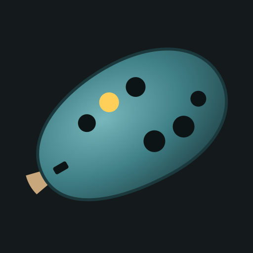

Cada agujero es una nota. Con varios pulsados suena el más agudo. El botón # sube medio tono mientras lo mantienes.
Sopla suave cerca del micrófono (abajo del móvil). Con auriculares funciona mejor.

Tapa los agujeros con los dedos y sopla al micrófono del móvil para que suene.